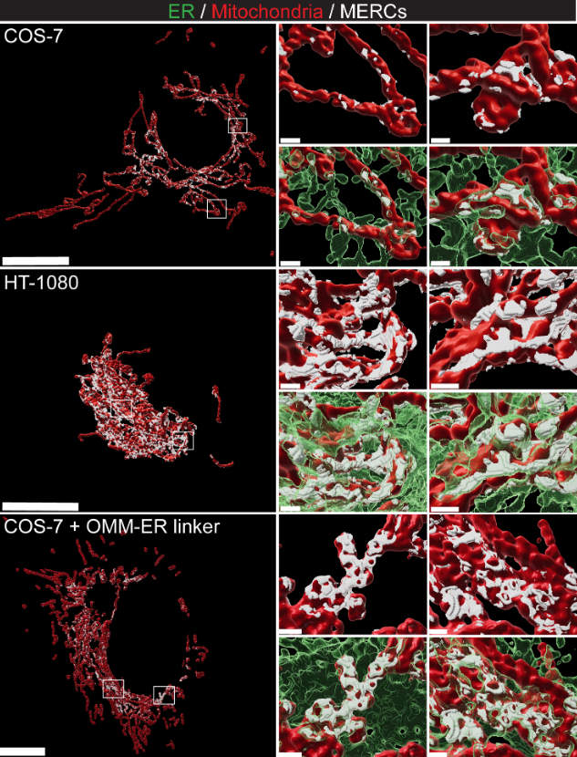

SubPrecisionContactDetection.jl Documentation
Welcome to the documentation for this package. This holds the implementation for MCS-DETECT, published in JCB. Please see the sidebar for relevant sections.
This package offers variable distance contact detection between two images (2/3D) when segmentation is not sufficiently accurate. For example, in superresolution microscopy of complex organelles, the contacts are $20-80$nm but the precision of the microscope (3D STED) is 100-150nm and supervised segmentation is thus not feasible.
The main algorithm uses probabilistic correlation of intensity and differential intensity to estimate where contact zones can exist.
In plain language, we can circumvent the precision by using the spatial context.
To use an analogy, suppose you are asked to find the third letter of this word [. . ? .]. Without any other information your best guess wil be 1/26.
If we add context, however: [b . ? d]. Now far fewer options are plausible, e.g. 'l' for bald, 'r' for bird. In other words, leveraging context helps reducing entropy.
The applications are not limited to superresolution microscopy, but please see the parameter section on adapting to different modalities.
The below 3D rendering shows the software predicting ER-Mitochondria contacts in 3D STED (credit DOI 10.1083/jcb.202206109).
You can view summarized functionality and improvements on the Releases page. Note that we follow the Apery constant for versioning:
v1=0.8.0
v2=0.8.3
v3=0.8.31
...
Mitochondria are in red, ER in green translucent, the contact zones in white.